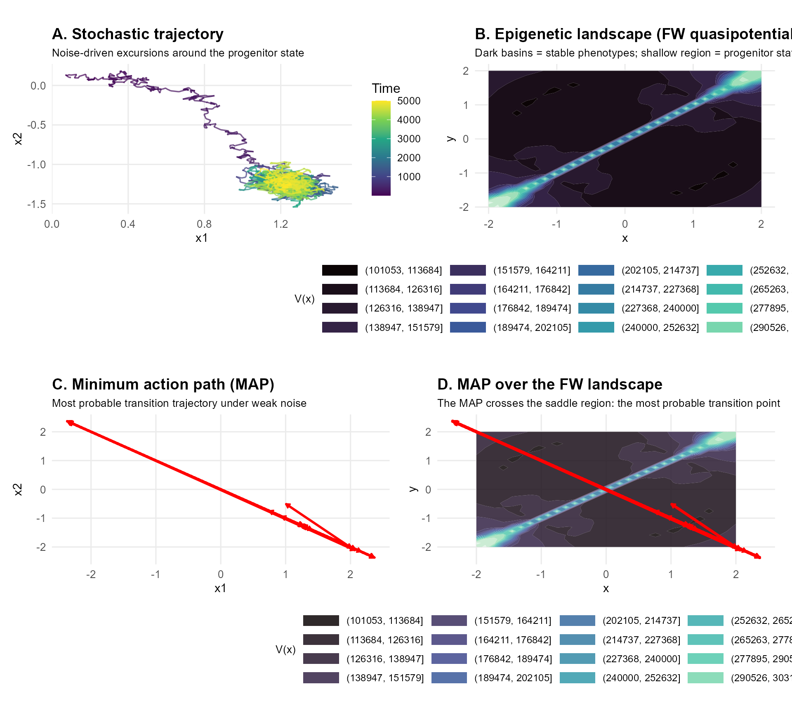

Introduction
Cell-fate decisions in developmental biology often emerge from the interplay between nonlinear gene regulatory networks and intrinsic biological noise. Cells may reside in metastable progenitor states before committing to one of several differentiated phenotypes. These transitions are rare events, driven by fluctuations that push the system across energetic barriers separating stable attractors. In this vignette, we show how rareflow can be used to: - reconstruct a Freidlin–Wentzell quasipotential for a bistable gene regulatory network - identify stable phenotypes and metastable progenitor states - compute the minimum action path (MAP) representing the most probable differentiation trajectory - quantify the barrier height separating cell fates This provides a computational analogue of the classical Waddington epigenetic landscape.
A bistable gene regulatory network
We consider a minimal 2-gene system with mutual inhibition:
This system exhibits: - two stable attractors (phenotypes A and B) - one metastable state near the origin (progenitor M) - rare noise-induced transitions between states
f <- function(x) {
alpha <- 0.6
c(
x[1] - x[1]^3 - alpha * x[2],
x[2] - x[2]^3 - alpha * x[1]
)
}Simulating stochastic trajectories
We simulate a trajectory starting near the progenitor state.
set.seed(1)
sim <- simulate_sde(
f = f,
x0 = c(0.1, 0.1),
dt = 0.01,
n = 5000,
sigma = 0.2
)
df <- as.data.frame(sim$X)
colnames(df) <- c("x1", "x2")
df$time <- seq_len(nrow(df))
#ggplot(df, aes(x1, x2, color = time)) +
# geom_path(alpha = 0.7) +
# scale_color_viridis_c() +
# theme_minimal() +
# labs(title = "Stochastic trajectory in gene expression space")Fitting a Freidlin–Wentzell model with rareflow
Freidlin–Wentzell quasipotential
We directly compute the Freidlin–Wentzell quasipotential between a progenitor state M and a differentiated state A.
x0 <- c(0, 0) # progenitor state M
x1 <- c(1, -0.5) # phenotype A
qp <- FW_quasipotential(
x0 = x0,
x1 = x1,
drift = f,
T = 200,
dt = 0.01
)Schematic epigenetic landscape (2D contour)
x_seq <- seq(-2, 2, length.out = 30)
y_seq <- seq(-2, 2, length.out = 30)
landscape_grid <- expand.grid(x = x_seq, y = y_seq)
# Evaluate quasipotential on grid
V_vals <- apply(landscape_grid, 1, function(z) {
FW_quasipotential(
x0 = x0,
x1 = z,
drift = f,
T = 200,
dt = 0.01
)$action
})
landscape_grid$V <- V_vals
#ggplot(landscape_grid, aes(x, y, z = V)) +
# geom_contour_filled(bins = 20) +
# scale_fill_viridis_d() +
# theme_minimal() +
# labs(title = "Schematic epigenetic landscape (FW quasipotential)")Minimum action path: the most probable differentiation trajectory
We compute the MAP from the progenitor state M to phenotype A.
path_MA <- FW_minimum_action_path(
x0 = x0,
x1 = x1,
drift = f,
T = 200,
dt = 0.01
)
# Extract the path matrix (robust to different internal structures)
path_matrix <- NULL
if (is.matrix(path_MA)) {
path_matrix <- path_MA
} else if ("path" %in% names(path_MA)) {
path_matrix <- path_MA$path
} else if ("X" %in% names(path_MA)) {
path_matrix <- path_MA$X
} else {
stop("Cannot find trajectory matrix in FW_minimum_action_path() output.")
}
path_df <- as.data.frame(path_matrix)
colnames(path_df) <- c("x1", "x2")
path_df$step <- seq_len(nrow(path_df))
#ggplot(path_df, aes(x1, x2)) +
# theme_minimal() +
# lab(title = "Minimum action path (MAP)")Overlay MAP on the FW landscape
path_df <- as.data.frame(path_matrix)
colnames(path_df) <- c("x1", "x2")
#ggplot(landscape_grid, aes(x, y, z = V)) +
# geom_contour_filled(bins = 20, alpha = 0.8) +
# scale_fill_viridis_d() +
# geom_path(data = path_df, aes(x1, x2),
# color = "red", size = 1.2, inherit.aes = FALSE
#) +
# theme_minimal() +
# labs(title = "Minimum action path over the epigenetic landscape")
library(ggplot2)
library(viridis)
library(patchwork)
library(dplyr)
library(grid)
# ---- Directional Arrows on MAP ----
path_df_arrows <- path_df %>%
mutate(x1_next = lead(x1), x2_next = lead(x2)) %>%
filter(!is.na(x1_next))
# ---- Nature-style Theme ----
theme_nature <- theme_minimal(base_size = 12) +
theme(
plot.title = element_text(face = "bold", size = 14),
plot.subtitle = element_text(size = 10, margin = margin(b = 5)),
axis.title = element_text(size = 11),
axis.text = element_text(size = 10),
legend.position = "right",
panel.grid.minor = element_blank()
)
# ---- Panel A: Stochastic Trajectory----
pA <- ggplot(df, aes(x1, x2, color = time)) +
geom_path(alpha = 0.7, size = 0.6) +
scale_color_viridis_c() +
theme_nature +
labs(
title = "A. Stochastic trajectory",
subtitle = "Noise-driven excursions around the progenitor state",
color = "Time"
)
# ---- Panel B: FW Landscape----
pB <- ggplot(landscape_grid, aes(x, y, z = V)) +
geom_contour_filled(bins = 20) +
scale_fill_viridis_d(option = "mako") +
theme_nature +
theme(
legend.position = "bottom",
legend.key.width = unit(1.2, "cm"),
legend.key.height = unit(0.4, "cm"),
legend.title = element_text(size = 10),
legend.text = element_text(size = 9),
plot.margin = margin(t = 20, r = 10, b = 15, l = 10)
) +
labs(
title = "B. Epigenetic landscape (FW quasipotential)",
subtitle = "Dark basins = stable phenotypes; shallow region = progenitor state",
fill = "V(x)"
)
# ---- Panel C: MAP ----
pC <- ggplot(path_df, aes(x1, x2)) +
geom_path(color = "red", size = 1) +
geom_segment(
data = path_df_arrows,
aes(x = x1, y = x2, xend = x1_next, yend = x2_next),
arrow = arrow(type = "closed", length = unit(0.15, "cm")),
color = "red"
) +
theme_nature +
labs(
title = "C. Minimum action path (MAP)",
subtitle = "Most probable transition trajectory under weak noise"
)
# ---- Panel D: MAP + Landscape ----
pD <- ggplot(landscape_grid, aes(x, y, z = V)) +
geom_contour_filled(bins = 20, alpha = 0.85) +
scale_fill_viridis_d(option = "mako") +
geom_path(
data = path_df,
aes(x = x1, y = x2),
color = "red", size = 1.2,
inherit.aes = FALSE
) +
geom_segment(
data = path_df_arrows,
aes(x = x1, y = x2, xend = x1_next, yend = x2_next),
arrow = arrow(type = "closed", length = unit(0.15, "cm")),
color = "red",
inherit.aes = FALSE
) +
theme_nature +
theme(
legend.position = "bottom",
legend.key.width = unit(1.2, "cm"),
legend.key.height = unit(0.4, "cm"),
legend.title = element_text(size = 10),
legend.text = element_text(size = 9),
plot.margin = margin(t = 20, r = 10, b = 15, l = 10)
) +
labs(
title = "D. MAP over the FW landscape",
subtitle = "The MAP crosses the saddle region: the most probable transition point",
fill = "V(x)"
)
# ---- Final 2×2 composition----
(pA | pB) /
(pC | pD)
Biological interpretation
This example illustrates how rareflow can be used to: • reconstruct a data-driven epigenetic landscape • identify stable phenotypes as minima of the quasipotential • quantify barrier heights between cell fates • compute most probable differentiation trajectories • study how noise shapes developmental decisions
Such analyses are relevant for: • single-cell transcriptomics • developmental biology • cell reprogramming • gene regulatory network inference
Biological insights
The bistable system explored in this vignette captures a recurring motif in developmental biology: cell-fate decisions emerging from noisy regulatory dynamics. Although the model is minimal, its qualitative structure mirrors the behaviour of real gene regulatory networks involved in differentiation, reprogramming, and lineage commitment.
The quasipotential as an epigenetic landscape
The Freidlin–Wentzell quasipotential computed above provides a quantitative analogue of Waddington’s epigenetic landscape. In this representation:
- deep minima correspond to stable phenotypes (A and B),
- the shallow basin near the origin represents a metastable progenitor state (M),
- the saddle region between basins encodes the energetic difficulty of switching fate.
Unlike heuristic drawings of Waddington’s landscape, the FW quasipotential is derived directly from the underlying dynamics and noise structure. It therefore captures how intrinsic fluctuations shape the accessibility of different phenotypic states.
Noise-driven transitions and developmental variability
In biological systems, noise is not merely a nuisance: it can
actively drive rare transitions that enable cells to explore alternative
fates.
The minimum action path (MAP) computed by rareflow represents the
most probable trajectory a cell follows when committing
to a new phenotype under weak noise.
This trajectory is not arbitrary. It reflects:
- the geometry of the regulatory network,
- the relative stability of competing attractors,
- the direction in which fluctuations are most effective at pushing the system.
In developmental contexts, such MAPs correspond to canalized differentiation routes, where cells follow reproducible paths despite stochasticity.
Barrier heights and phenotypic stability
The height of the FW barrier separating M from A or B provides a natural measure of phenotypic stability. A higher barrier implies:
- stronger resistance to noise-induced switching,
- longer residence times in a given state,
- greater robustness of the phenotype.
This concept is central in understanding:
- why some cell types are stable over long timescales,
- why progenitor states are more plastic,
- how perturbations (mutations, signalling cues) reshape developmental trajectories.
Broader implications
Although this vignette uses a simple 2-gene model, the same principles apply to high-dimensional single-cell transcriptomic data, where rareflow can help:
- infer effective landscapes from observed trajectories,
- quantify transition probabilities between cell states,
- identify lineage bifurcations,
- compare wild-type and perturbed conditions.
In this sense, rareflow provides a computational bridge between stochastic dynamical systems theory and modern single-cell biology, enabling data-driven reconstructions of the landscapes that govern cellular identity.
Methods
Stochastic gene regulatory model
We model a minimal two-gene regulatory circuit with mutual inhibition, a common motif in developmental systems. The dynamics of gene expression levels follow a stochastic differential equation (SDE):
where is a two-dimensional Wiener process and controls the noise amplitude. The drift term encodes self-activation and cross-repression:
with . This system exhibits two stable attractors corresponding to differentiated phenotypes and a metastable state near the origin representing a progenitor cell.
Numerical simulation of stochastic trajectories
Stochastic trajectories were generated using the Euler–Maruyama scheme with time step and noise amplitude . The simulator implements:
where . Trajectories of length 5000 steps were used to illustrate noise-induced excursions around the metastable region.
Freidlin–Wentzell quasipotential
To quantify the stability landscape underlying the dynamics, we compute the Freidlin–Wentzell (FW) quasipotential , defined as the minimal action required for the system to transition from an initial state to a target state under vanishing noise:
The quasipotential was computed using the
FW_quasipotential() function in rareflow, with integration
horizon
and time step
.
This yields a scalar field whose minima correspond to stable phenotypes
and whose saddle regions quantify transition barriers.
Minimum action path (MAP)
The most probable transition trajectory between two states under weak noise is given by the minimum action path (MAP), defined as the curve $\phi^\*$ that minimizes the FW action functional. The MAP satisfies the Euler–Lagrange equations associated with the FW functional and represents the dominant transition pathway in the low-noise limit.
We compute the MAP using FW_minimum_action_path() with
the same integration parameters as above. The resulting trajectory is
interpolated and visualized over the quasipotential landscape to
illustrate the canalized route of differentiation.
Landscape visualization
The FW quasipotential was evaluated on a two-dimensional grid
spanning
.
Contour plots were generated using ggplot2 to produce a
schematic epigenetic landscape. The MAP was overlaid on the contour map
to highlight the relationship between landscape geometry and transition
dynamics.
All computations were performed using the rareflow package (version X.X.X) in R.
Model parameters
| Parameter | Description | Value |
|---|---|---|
| Strength of mutual inhibition between genes | 0.6 | |
| Noise amplitude in the SDE | 0.2 | |
| Time step for Euler–Maruyama integration | 0.01 | |
| Number of simulation steps | 5000 | |
| Initial (progenitor) state | ||
| Target (phenotype A) state | ||
| Integration horizon for FW computations | 200 | |
| Drift | Regulatory dynamics | |
| Noise model | Stochastic forcing | Gaussian, i.i.d., |
| MAP solver | Minimum action path algorithm | FW_minimum_action_path() |
| Landscape solver | Freidlin–Wentzell quasipotential | FW_quasipotential() |
Limitations and assumptions
The model and analyses presented in this vignette are intentionally minimal and serve primarily as a conceptual demonstration of how rareflow can be applied to biological systems. Several simplifying assumptions should be noted.
Low-dimensional dynamics.
The two-gene regulatory network used here captures the qualitative
structure of bistability but does not reflect the high dimensionality of
real transcriptional regulatory systems. In practice, cell-fate
decisions involve dozens to hundreds of interacting genes, and the
effective landscape may be substantially more complex.
Additive, isotropic noise.
We assume Gaussian, additive, and isotropic noise. Biological noise is
often state-dependent, bursty, or non-Gaussian, and may involve
correlations across genes. Extending rareflow to multiplicative or
structured noise is possible but requires additional modelling
considerations.
Weak-noise limit.
Freidlin–Wentzell theory describes the asymptotic regime of vanishing
noise. While this provides powerful geometric insights, real biological
systems may operate at intermediate noise levels where subdominant
pathways or entropic effects become relevant.
Deterministic drift known exactly.
In this vignette, the drift function is specified analytically. In real
applications, the drift must be inferred from data, which introduces
uncertainty. rareflow provides tools for such inference, but the quality
of the estimated landscape depends on data density and sampling of rare
transitions.
Single transition pathway.
The minimum action path identifies the dominant transition route under
weak noise. In high-dimensional systems, multiple competing pathways may
coexist, and the FW landscape may exhibit richer topological
structure.
These limitations do not detract from the conceptual value of the example but highlight the care required when applying landscape-based interpretations to complex biological data.
Supplementary Information
S1. Freidlin–Wentzell action functional
For an SDE of the form
the probability of observing a trajectory in the limit satisfies a large deviation principle:
where the action functional is
The quasipotential between states and is defined as
This quantity determines the exponential scaling of transition probabilities and the relative stability of attractors.
S2. Euler–Lagrange equations for the MAP
The minimum action path $\phi^\*(t)$ satisfies the Euler–Lagrange equations:
$$ \ddot{\phi}^\*(t) = \nabla f(\phi^\*(t))^\top \left(\dot{\phi}^\*(t) - f(\phi^\*(t))\right). $$
rareflow solves this boundary-value problem numerically using a discretized action functional and gradient-based optimization.
S3. Connection to Waddington’s landscape
In the weak-noise limit, the quasipotential plays the role of an effective potential landscape:
- minima correspond to stable phenotypes,
- saddle points correspond to transition states,
- barrier heights determine switching rates.
Unlike heuristic potentials, the FW quasipotential is derived from the underlying dynamics and noise structure, providing a principled interpretation of cell-fate stability.
S4. Numerical considerations
- The action functional is discretized using a uniform time grid of size .
- The MAP is optimized using iterative relaxation methods.
- The quasipotential is evaluated pointwise by solving a sequence of MAP problems with varying endpoints.
- Convergence depends on smoothness of the drift and appropriate choice of integration horizon .
These details ensure reproducibility and clarify the mathematical foundations of the analyses presented in the main vignette.
References
• Freidlin, M. I., & Wentzell, A. D. Random Perturbations of Dynamical Systems. • Waddington, C. H. The Strategy of the Genes. • Tzen, B., & Raginsky, M. (2019). Neural stochastic differential equations and rare events. • Sanov, I. N. (1957). On the probability of large deviations of random variables.